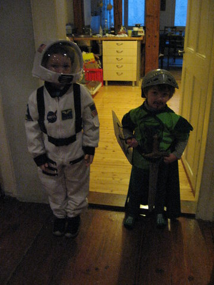

herbst.
Jetzt ist ja wieder Herbst. Was macht man im Herbst, wenn man Kinder hat? (Bzw auch wenn man keine Kinder hat, je nachdem wie man halt so drauf ist)
Drachen steigen lassen.
Ein Bild, das man von so mancher Drachenwiese kennt sind Kinder (mit Eltern dabei) die irgendeinen flattrigen Drachen in Schmetterlings- oder Vogel-Form an einer Schnur hinter sich herziehen, während sie über den Acker rennen und der Drachen purzelt hinter ihnen Ecke über Ecke durch den Dreck ...
Wir haben inzwischen ein Drachenmodell gefunden, bei dem das nicht passiert, weil es reproduzierbar sobald auch nur wenig Wind vorhanden ist so gut wie von selber fliegt und auch nicht kaputt zu kriegen ist, weil es nämlich gar kein Gestänge enthält.
Ist das Modell "Sleddy" von der Firma Invento HQ. In unserem Fall natürlich in doppelter Ausführung im Piraten-Design vorhanden. Einzige Änderung, die man dran vornehmen können wollen würde wäre potentiell eine leichtere, gleich starke Leine (die mitgelieferte ist nämlich recht schwer und limitiert dadurch die möglichen Windstärken nach unten hin).
Wir sind jedenfalls begeistert, uneingeschränkte Empfehlung.
zuhoerer.
Es wäre ja viel einfacher, wenn einen dieses nicht-beachtet-werden nicht so sehr ermüden würde. Dass man alles fünf mal sagen muss und dann am Ende immer noch nicht das passiert, was man eigentlich wollte. Grade eben passierte (beim ins Bett bringen) Folgendes:
Susanne - Moritz, ziehst du bitten den Pyjama an?
Moritz - *spielt weiter mit Autos, reagiert nicht*
Susanne - *wiederholt ihre Aufforderung 3 mal*
ich - Moritz, die Mama redet mit dir, gibst du ihr bitte zumindest eine Antwort?
Moritz - äh ... ich war doch schon!
Seine Heuristik, was das Wahrscheinlichste ist, was seine Mutter grade gesagt haben könnte ist also noch ausbaufähig ..
krinken.
Moritz hat da noch ein Aussprache-Problem (das er aber scheints mit vielen anderen in seinem Alter teilt, ich kenn mich da ja nicht so aus), nämlich dass er den Laut "tr" als "kr" ausspricht. Da kommt dann eben sowas dabei raus wie im Titel dieses Eintrags, also er will "Saft krinken" oder sieht wo einen "Kraktor" undsoweiter.
Den meisten Leuten fällt das gar nicht bewusst auf, woran man sieht dass die zwei Laute auch akustisch arg nah beisammen liegen, man substituiert das unbewusst und denkt sich nix weiter dabei.
Anscheinend aber, so weiss ich seit kurzem, ist das dem Frederik so richtig bewusst aufgefallen. Letzte Woche rannte nämlich der Moritz zu mir und rief:
Ich will den roten Krug!
und ich drauf so "wie bitte was?" (weil ich noch abgelenkt war und nicht direkt gecheckt hab was er will). Woraufhin der immer hilfreiche Frederik vom andern Ende des Zimmers rief
Er meint "Trug"!
Ah. Na dann. Musste dann erklären, dass es jetzt genau in dem Fall nicht "Trug" sondern wirklich "Krug" ist. Er wollte damit nämlich Wasser von A nach B tragen.
spielplatz.
Da ich derzeit Betriebsurlaub habe, Susanne aber nicht, ausserdem der Kindergarten geschlossen ist (wobei Frederik ja ab Herbst dann eh in der Schule ist *Panik*), bin ich mit den beiden Kindern auf Tirol-Urlaub, genauer in Gnadenwald.
Wir waren zwar auch einmal schwimmen (in Wattens, wo sich das Freibad seit meiner Jugend nicht verändert hat, war sehr schön) aber seit Donnerstag letzter Woche ist es ja nicht mehr soo heiss.
Wir waren daher auch auf Spielplätzen unterwegs.
Schon mehrmals waren wir in Mils auf einem ziemlich neuen Wasser- bzw Waldspielplatz, den ich persönlich sehr toll finde, vermutlich auch weil er den heimlichen Wasserbau-Ingenieur (was ich dann doch nicht studiert habe) in mir anspricht. Dort gibts unter anderem eine grossartige Bach-Anlage, wo oben in ein Becken Wasser rinnt, das man dann über verschiedene Becken mit Stöpseln und Schleusen auf unterschiedlichen Wegen talwärts rinnen lassen kann. Ausserdem eine lange Röhren-Rutsche, verschiedenstes Kletter- und Balancier-Zeug an Bäumen und eine Kletterwand und .. ja. Ausserdem stehen da viele hohe Nadelbäume mit grossen Kronen, was bedeutet dass man jetzt im Sommer genug Schatten hat, und ein Parkplatz ist auch direkt daneben.
Heute sind wir dann ausserdem, der Nostalgie wegen und weil ich die Kinder dann doch überreden konnte, noch was andres anzuschauen, nach Hoch-Rum auf den dortigen Waldspielplatz gefahren, den ich noch aus meiner Kindheit kenne. Der ist seit damals (also vor grob 25 Jahren) doch um einiges größer geworden, hat aber seinen Charme behalten. Genauso wie der in Mils ist er auch sehr gut von Bäumen beschattet, also im Sommer günstig. Es gibt einen großen Parkplatz daneben (auch für Wanderer) mit Toiletten-Anlage (die allerdings nicht grossartig sauber war heute).
Ganz viele kleine Häuser, Balancier-Spiele, Schaukeln, Rutschen, eine Seilbahn (die nicht mehr so cool ist wie zu meiner Kinderzeit, aber die damalige Konfiguration wäre halt heutzutage auch nicht mehr erlaubt (damals war das nur so ein Handgriff, an dem man baumelte, ohne Sitz unten dran)) und ein Barfuss-Pfad (mit verschiedenen Materialien und Wasserbecken zum durchlaufen) sind nur ein paar der Attraktionen.
Meine Kinder meinten, der in Hoch-Rum sei besser.
Ich bin mir nicht ganz sicher, ich finde es ist unentschieden.
administrativa.
Inzwischen (also seit dem Eintrag im Mai) ist naturgemäß einiges passiert, vor allem gibts viele neue Bilder. Die sind auch schon von der Kamera auf die Festplatte gewandert, ich hab sie nur noch nicht fertig bearbeitet und betitelt undsoweiter. Sobald das erledigt ist kann ich sie auch hier hochladen.
Das enthält dann uA unseren Urlaub in Imperia oder auch unser Camping-Wochenende in Isny und die Geburtstagsfeier, die wir mit Frederik und seinen Kindergartenfreunden auf einem Bauernhof verbracht haben.
Kommt demnächst. Ganz fest versprochen.
portugal.
Moritz ist inzwischen draufgekommen (also nicht nur als abstrakter Datenpunkt, den man ihm halt irgendwann mitgeteilt hat, sondern so wirklich), dass es verschiedene Länder gibt, also dass wir jetzt gerade in Deutschland wohnen aber Oma, Opa, Großmama und Großpapa in Österreich undsoweiter. Und dass wir im Urlaub in Italien waren und dass die Leute da eine andere Sprache sprechen.
Sein völlig ohne Faktenbasis gewähltes Sehnsuchtsland ist allerdings Portugal. Zuerst aufgekommen ist das wohl im Kindergarten beim Fussballspielen, wo irgendwer das als mögliches Land, wo eine Mannschaft herkommen könnte erwähnt hatte. Da hat ihm wohl der Klang des Wortes gefallen.
Ab da hat er immer, wenn irgendwo Länder erwähnt worden "oder Portugal!" dazugesagt. So weit so schön. Neulich ergab sich dann folgender Dialog mit dem Onkel Bile:
Mo - ich möchte mal mit dir in ein anderes Land fahren!
Bi - ahja? wohin denn?
Mo - Nach PORTUGAL!
Bi - [kennt das schon] aaaAAAaaah. Und was machen wir dann da?
Mo - wir KÄMPFEN!
Bi - [kennt den Teil noch nicht, ist verwirrt] kämpfen?
Mo - ja, und dann hauen wir wem mit dem Schwert auf den Kopf!
Fr - [mischt sich jetzt ein] ich hab geschwindelt .. in Portugal wird gar nicht gekämpft
Mo - [Pause] dann kämpfen nur wir beide!
Portugal ist also doch nicht das Land, das wie ein permanentes Mittelalterfest aussieht ..
horror2.
Frederik hat neulich (vermutlich aus einer Packung Haarfärbemittel übrig geblieben) zwei so Latex-Einmalhandschuhe gefunden und die dann gleich angezogen. Zuerst hat er bemerkt, dass, nachdem ihm die ein bissl zu gross waren, wenn da an den Handflächen ein bissl Luft drunter ist und er die Handflächen zusammendrückt, das ein "lustiges" Geräusch gibt. So weit so gut.
Dann hatte er also die Handschuhe an und ist in dieser klassischen Chirurgen-Handhaltung (Ellbogen abgewinkelt mit Händen nach oben vor dem Oberkörper, Handinnenflächen zum Oberkörper gerichtet) herumgelaufen und hat monoton immer wieder gerufen "ICH BIN DER ASSISTENT!"
Zuerst hatte ich ja diverse Horrorfilm-Assoziationen, bis uns klar wurde dass er ja grade erst beim Zahnarzt war (also mit dem Kindergarten waren sie bei einer Kindergarten-Mutter, die Zahnärztin ist, die ihnen verschiedenes erklärt und gezeigt hat und so) und das wohl von dort hat.
Trotzdem.
"ICH BIN DER ASSISTENT!"
UPDATE:
Susanne hat mir soeben noch die Quelle der Handschuhe nachgereicht, die sind
auch von dem Zahnarzt-Besuch als Mitbringsel übrig geblieben.
reinhold.
Eine Begebenheit von neulich abends. Ich hatte Moritz und Frederik ca eine dreiviertel Stunde davor ins Bett gebracht und war grade ein Stockwerk tiefer damit beschäftigt, ein bissl die Küche aufzuräumen. Da hörte ich bekannte Geräusche auf der Treppe, wo der Moritz grade runterkam, mit Maus (von der "Sendung mit der -") und Trinkflasche (leer) im Arm. Also hab ich ihm die Trinkflasche mit Wasser aufgefüllt und gesagt
ich - dann bring ich dich jetzt wieder ins Bett
Moritz - nein, da war ich schon
ich - ... ?
Moritz - und jetzt bin ich zu euch spaziert.
(mit "zu euch" hat er unser Schlafzimmer gemeint).
Sprachs und "spazierte" in unser Schlafzimmer und auf unser Bett ...
horror.
Neulich, so glaube ich, hat Frederik seine erste Horror-Geschichte erzählt (also seinerseits mit Absicht). Wir waren grade zu dritt (Moritz, Frederik und ich) mit dem Auto unterwegs, da fragte mich Frederik wie das denn sei, wenn man wo auf eine Giftspinne träfe und auf die drauftrete, ob einen die dann trotzdem beissen kann.
Ich hab geantwortet, dass das wohl von den Schuhen abhängt, die man (oder nicht) anhat und davon, ob das eine Spinne ist, die springen kann oder so, kenn mich ja auch nicht super mit Spinnen aus.
Daraufhin hat sich Frederik zu Moritz gedreht und gemeint
F - es gibt Giftspinnen, zum Beispiel gibts auch Kreuzspinnen
ich - die Kreuzspinnen sind aber gar nicht sooo giftig, da gibts andre die viel ärger sind
F - [an der Stelle hat er seine Stimme verstellt] es gibt aber auch BLUUTSPINNEN!
Moritz - schaut ungläubig
F - die saugen einem das BLUUT aus! Und das Blut braucht man zum Leben!
M - ja
F - und gestern hab ich am Spielplatz eine gesehn! Bei der Rutsche!
[kurze Pause]
F - [Stimme wieder normal] ich hab geschwindelt, die gibts gar nicht
Moritz war ausreichend beeindruckt.
blumenbienen.
Zwei Zitate von Moritz, das erste war vor ein paar Tagen, mit viel Aufregung in der Stimme:
In meinem Kindergarten, die Mia, die hat keinen Penis!
Ich hab ihm dann erklärt, dass das bei Mädchen immer so ist. Gestern waren wir grade unterwegs zum Schwimmen, plötzlich ruft es völlig unzusammenhängend von hinten aus dem Auto
keinen Penis haben ist so lustig!
UPDATE: danke für den Hinweis nach Graz. Die Insekten mit dem Stachel schreibt man dann doch immer noch ohne 'h'.
bemueht.
Aus unerklärlichen Gründen hat Moritz beschlossen, dass er zu seiner Oma ganz besonders nett sein will. Also wirklich fundamental anders als sonst. Ausgewählte Zitate:
*treuherziger Blick* kann ich dir irgendwie helfen, Oma?
mir schmeckt alles was du kochst!
ich hab mir gedacht, weil du Blumen magst, ich stell dir den Teller mit den Blumen drauf hin.
feinschmecker.
Neulich war Susanne grade mit den Kindern auf dem Heimweg und begann ein Gespräch darüber, was man denn abends essen könnte. Sie schlug Salamibrot vor, oder was mit Salat oder so.
Frederik legte daraufhin den Kopf schief, schaute sehr nachdenklich und meinte
Weisst du, eigentlich hatte ich eher an Waffeln gedacht oder Pfannkuchen oder so ...
Milchreis wäre auch noch angeboten worden, fand er auch nicht OK.
bilder.
Ich hab jetzt mal endlich wieder Bilder online gestellt, noch ein paar aus dem August (nach unserem Urlaub) und dann bis Feber 2013 durch. Dezember enthält wenig überraschend ein paar mehr als die anderen Monate.
Hier ein Vorschau-Bild aus dem Feber zum Thema Fasching:

spiegel.
Warum ist das eigentlich so, dass Kinder absolut nicht zu normalem Verhalten fähig sind, sobald sie sich in einem Spiegel sehen? Wir haben im Vorzimmer (i.e. da wo man Schuhe und Mantel anzieht) einen großen Spiegel hängen, und grad bei Frederik ist das so, dass sobald er in die Richtung schaut er nur noch Grimassen schneidet und Blödsinn macht, egal wie sehr man ihm mitzuteilen versucht, dass es grade eilig ist.
Wobei man nicht das Gefühl hat, dass das einer bewussten Kontrolle unterliegt, das scheint einfach von selber zu passieren.
monster.
Grade ist Frederik beim Schwimmkurs und ich hab mit Moritz besprochen, dass wir nachher wo bei einem Geschäft eine Breze kaufen oder sowas. Daraufhin:
Mo - vielleicht gibts da auch ein Monster-Geschäft
ich - was kann man da kaufen, Monster?
M - Nein, ein Geschäft für Monster!
i - und was kann man da kaufen?
M - Sachen für Monster zum Essen.
i - was essen die so?
M - Andere Kinder.
i - da kann man also Kinder kaufen?
M - ja, für die Monster
spiel.
Moritz soeben zur Großmama:
spiel mit mir!
du spielst die Verlierer!
du musst mitspielen, ich hab dich rausgesiegt.
Keine weiteren Fragen.
derhelm.
Geklärt. Da wollte ich was zum Thema Ski-Helm schreiben, weil wir nämlich welche gekauft haben für Frederiks Skikurs, den er in der Woche zwischen Weihnachten und Neujahr auf der Seegrube über Innsbruck gemacht hat.
War übrigens super! (Bericht später ausführlich)
Jedenfalls. Ich nehm den alten nicht-Eintrag raus ...
addendum.
OK, der Eintrag drunter mit dem Titel "Helm" scheint irgendwie .. unvollständig zu sein. Ich muss mal klären was da passiert ist. Womöglich hatte ich da angefangen, was zu schreiben und dann drauf vergessen und jetzt ist es online gerutscht? Wie auch immer. Verschwindet möglicherweise noch.
weihnachten.
Letzten Freitag bin ich mit Frederik über den Münsterplatz gegangen, da hat er plötzlich träumend schräg in die Luft geschaut und gesagt
Ich wünschte, es wäre immer Weihnachten.
Drauf frag ich natürlich nach, warum er sich das denn genau wünscht, woraufhin er meinte
Dann könnten wir jeden Abend schlafen gehen und am nächsten Tag wären wieder neue Geschenke da!
Ich hab dann versucht darauf hinzuweisen, dass auf die Art ihr Zimmer (und dann das Haus) sehr schnell voll würde und dann kein Platz mehr für Neues wäre.
Ich weiss noch nicht genau, ob ich ihn damit überzeugt habe.
ordnung.
Grade eben vorhin im Kinderzimmer:
Moritz (verblüfft) - wieso räumst du auf?
Frederik (schulterzuckend) - so halt
(unsere Vermutung: schön langsam fällt ihm auf, dass das mit den kleinen Legosteinen sonst schwierig wird, wenn er sie nicht mehr findet)
nordfriesland.
Wir waren ja im Sommerurlaub in Nordfriesland (genauergesagt in Dagebüll). Dort haben wir natürlich einige Photos gemacht und jetzt endlich hab ich sie auch online gestellt.
Teaser:
pyjama.
Kurze Durchsage von Moritz:
Ich will meinen Pyjama nie mehr ausziehen!
suess.
Kurze Durchsage:
Moritz ist der Meinung, der Singular von "Süssigkeiten" wäre "ein Süssig".
nieheutenochnicht.
Heute gab es eine Diskussion dazu, von welcher Fernsehserie denn eine Folge angeschaut werden sollte. Moritz wollte, wie immer, den Feuerwehrmann Sam, während Frederik (auf Susannes Vorschlag hin) seit langem mal wieder den Kleinen Roten Traktor anschauen wollte. Dazu Frederik:
Jaaaaa! Den haben wir im ganzen Leben noch nie heute noch nicht angeschaut!
Überhaupt sind einige Dinge sehr oft "noch nie".
Moritz meinte dann auch zum Feuerwehrmann Sam, dass sie den "noch nie" angeschaut hätten, was Frederik entrüstet korrigiert hat.
verbluefft.
Gestern waren wir mal wieder (ganz kurzfristig entschieden) in Blaustein zum schwimmen, also im Bad Blau. Abgesehn von der erfreulichen Nachricht, dass Frederik inzwischen deutlich weniger Angst vor dem Wasser hat als nocht vor einem halben Jahr, ist mein Hauptthema aber hier der Moritz.
Der war ganz ausser sich vor Freude und ist einfach so zuerst eine Treppe hinunter und dann auch direkt vom Beckenrand ins Wasser gesprungen (jeweils mit Schwimmflügeln). Mit den Schwimmflügeln an ist er auch einfach so rumgeschwommen, ohne dass ihm irgendwer gezeigt oder erklärt hätte wie das geht, aber er kam problemlos vorwärts.
Später dann sassen wir beim Baby-Becken und die beiden beschlossen, dass sie die Schwimmflügel ausziehen wollen. Nachdem das Babybecken etwa Knie-tief ist (wenn überhaupt) hatten wir da nix dagegen. Ein wenig später hab ich dann den Moritz gefragt, ob er mit mir nochmal ins grosse Becken zum Rausschwimmen gehen mag (das ist im Bad Blau eines mit warmem Wasser, sehr angenehm), einfach um zu schauen wie er sich im tiefen Wasser verhält wenn er nicht einfach oben auf schwimmt sondern nur meine Hand hat (nachdems da mit dem Frederik im Schwimm-Vorbereitungskurs durchaus Angst-Probleme gegeben hatte).
Moritz war gleich dafür, aber dann an der Treppe war er sehr dagegen, dass ich seine Hand nehme. Er bestand vehement darauf, dass er das alleine kann. Also dacht ich na gut, hilft ja nix, muss er lernen und blieb mit meiner Hand 10 Zentimeter weit weg von ihm. Er machte noch einen Schritt und verschwand unter Wasser.
Ich hab ihn dann rausgezogen und er war sehr erstaunt, dass er nicht oben auf geschwommen war. Damit hatte er einfach überhaupt nicht gerechnet.
sch.
Oft fällt einem ja gar nicht so sehr auf, dass die eigenen Kinder eine andere Sprache sprechen als man selbst. Aber die wachsen halt eben dort auf, wo sie aufwachsen, mit Kindergartenfreunden und anderen Bekanntschaften, und .. ja.
Umso lustiger ist es dann, wenn man zu einem Wort kommt, das sie nur von einem selbst oder den Grosseltern kennen und deshalb eben so aussprechen, wie sie es dort gehört haben. Frederik sagt zum Beispiel "Inschbrugg". Sehr schön.